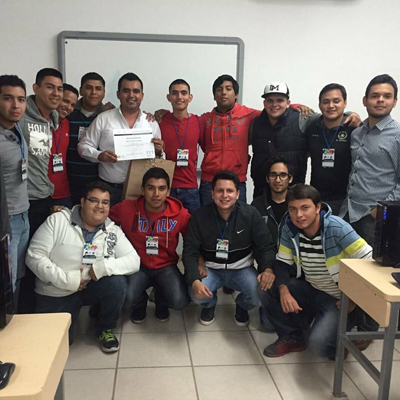
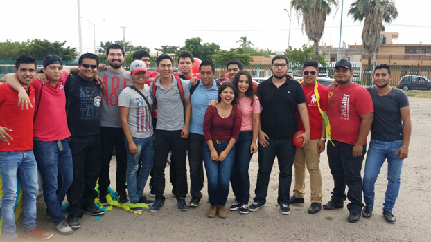

Universidad
Universidad

Fotografía de un día cualquiera en clase de Taller de base de datos.
Actualmente estudio la universidad en el Instituto Tecnológico de los Mochis, en la carrera de Ingeniería en Informática, y es una carrera que me gusta mucho, desde que entre estudio en el turno matutino, solo reprobé una materia que fue Calculo integral, la repetí y aprobé, al principio del semestre me gustaba mucho porque éramos muchos estudiando esta carrera y yo ya tenía mis mejores amigos en el aula, pero en segundo semestre la mayoría se fueron a otra escuela, y tuve que hacer otros amigos.
He tenido muy buenos maestros pero también pésimos maestros, algunos muy irresponsables ya que faltaban demasiado. Ahora estudio el sexto semestre y voy en el nivel 4 de inglés del tecnológico. Tengo promedio de 89.29.
Paraescolar

El equipo y ropa que usaba para entrenar beisbol
En el tercer semestre me inscribí en el paraescolar de béisbol, aunque no soy muy fan de este deporte me gustó mucho aprender cosas sobre este deporte, también conocí cosas de mi que no sabía cómo mi fuerza al lanzar la pelote, y el atrapar la pelota. Esta actividad duro 6 meses ya tengo mi hoja de liberación de mi paraescolar.
Talleres

Fotografía del último día de clases del taller de Desarrollo web
Estuve en el taller de desarrollo web en el simposium de informática, el curso duro 3 días y durante esos tres días aprendimos lo básico sobre crear páginas web usando html y css, recuerdo que creamos un sitio que vendía productos, yo la hice acerca de Apple y vendía algunos de sus productos, nos enseñaron cosas muy interesantes y me gustó mucho ese curso y actualmente curso una asignatura relacionada a eso y me gusta mucho.
Compañeros
Foto que nos tomamos el equipo antes de salir al desfile
Participé junto con mis compañeros generación de la carrea de informática en el 40 aniversario del Tecnológico de Los Mochis. Apoyamos a un grupo de la carrera en un Rally y el grupo ganador seria premiado por una taquiza, hicimos que la carrera de informática la ganara, terminando el rally llegamos a celebrar a un salón de eventos con alberca donde todos nos divertimos.